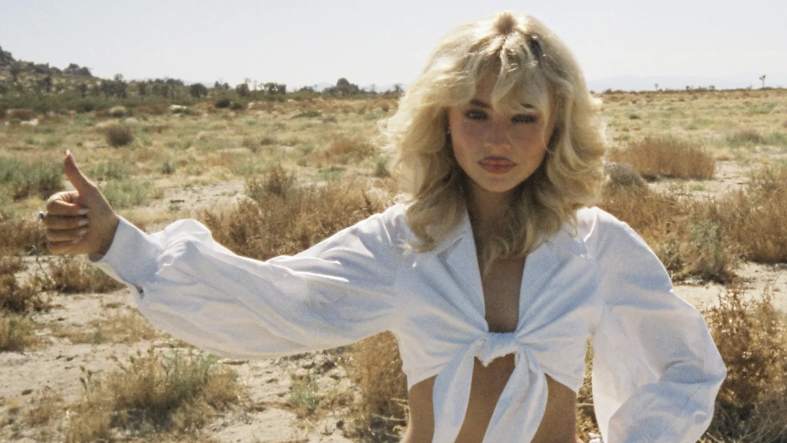
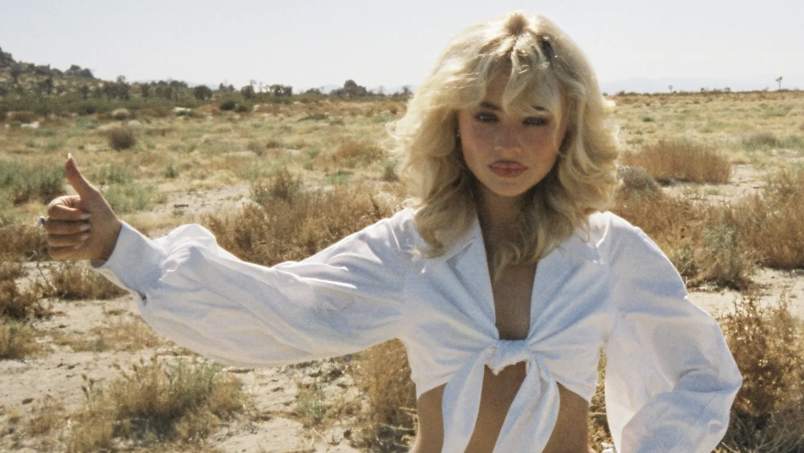

Sabrina Carpenter’s beginnings
Sabrina Carpenter began acting at a young age, gaining the most
recognition for her role as Maya on
From actress to singer
Since beginning her music career, Sabrina Carpenter has become a
rising figure in the pop industry. She has embarked on several headlining tours, performing across
North America, Europe, and Asia, and has also appeared at major music festivals. Her songs have
gained viral popularity on streaming platforms and social media, especially with younger audiences who
connect with her honest and playful lyricism. In addition to her music, Sabrina has starred in films and
television projects and partnered with global brands like
Discography
- Eyes wide open (2015)
- Evolution (2016)
- Singular: Act I (2018)
- Singular: Act II (2018)
- Emails I can’t send (2022)
- Short n’ Sweet (2024)
- Short n’ Sweet (Deluxe) (2025)
- Man’s Best Friend (2025)
Music Milestones
- Release of debut album Eyes Wide Open (2015)
- Viral breakout with the single Nonsense (2023)
- Opening act for Taylor Swift’s Eras Tour (2023–2024)
- Release of Short n’ Sweet (2024) and the her Short n' Sweet World Tour
- First
Billboard
Hot 100 Top 10 hit with Espresso (2024) - Release and rollout of Man’s Best Friend (2025), including the number-one single “Manchild”
Gallery
 
